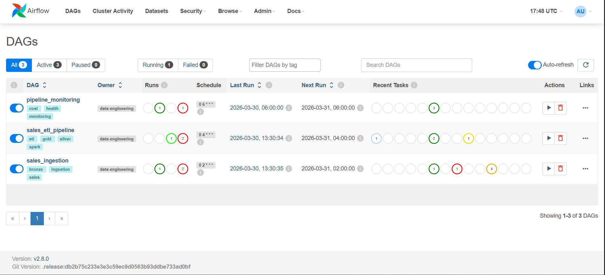
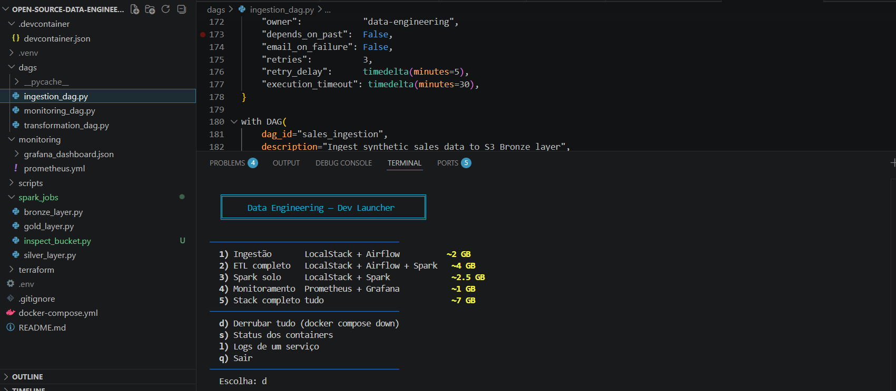
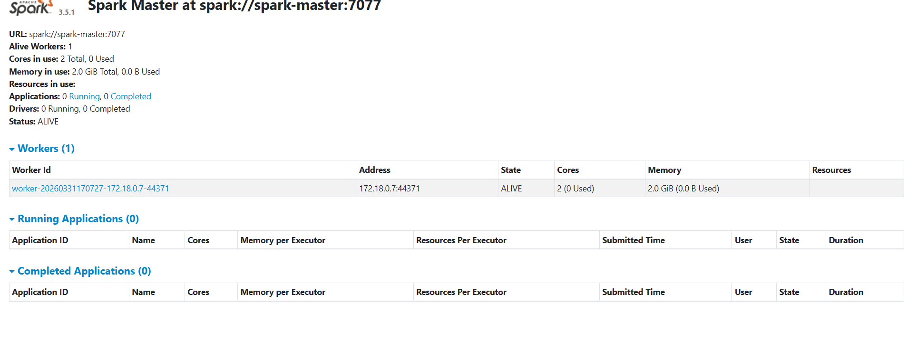
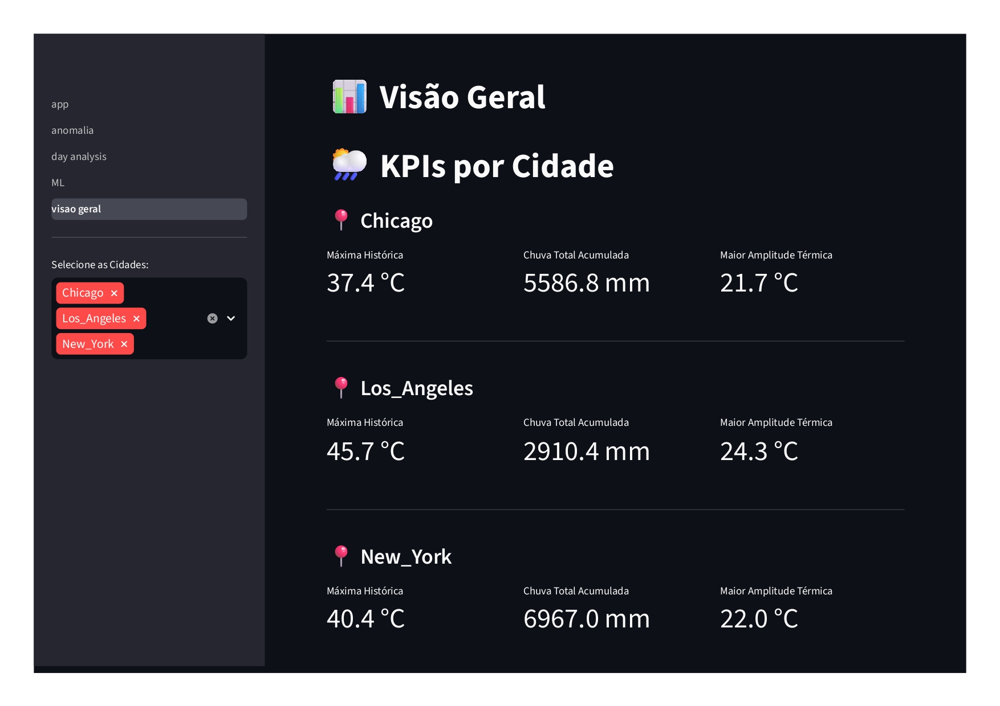
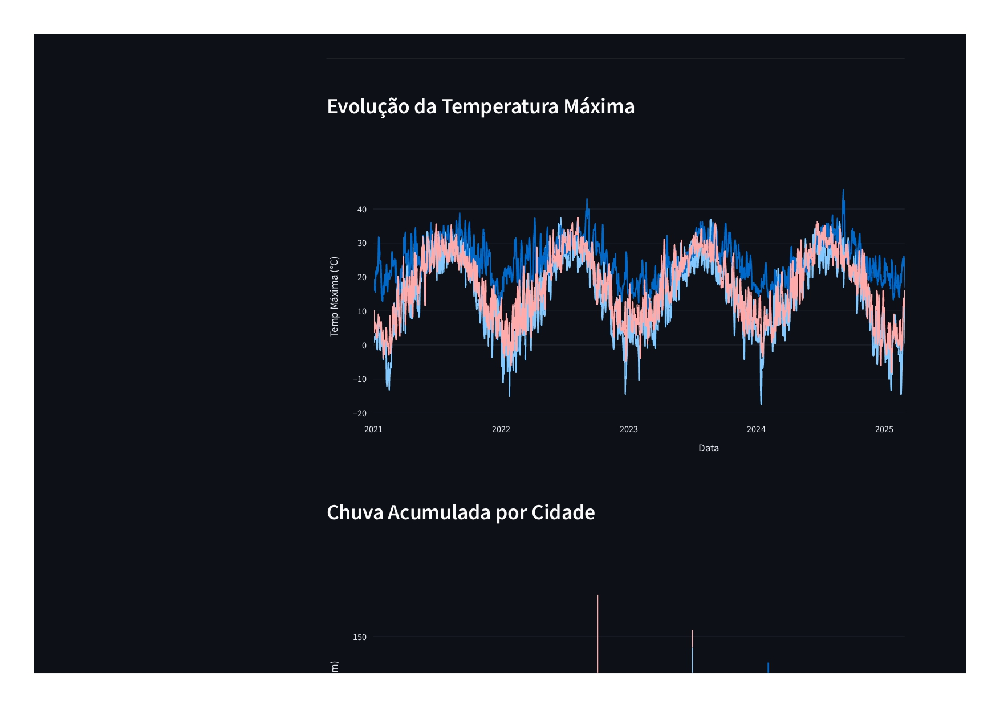
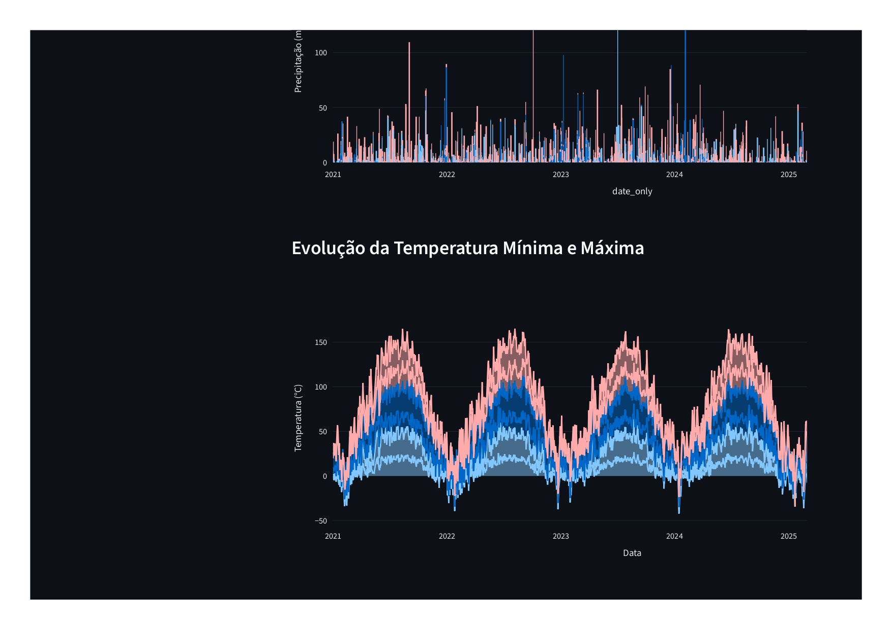
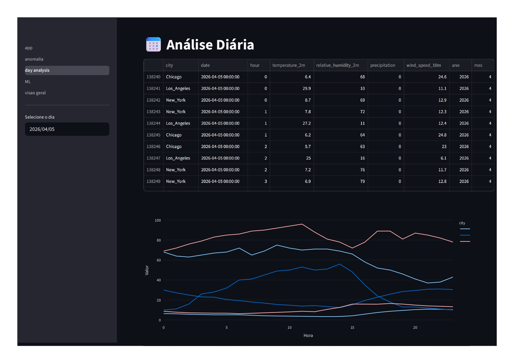
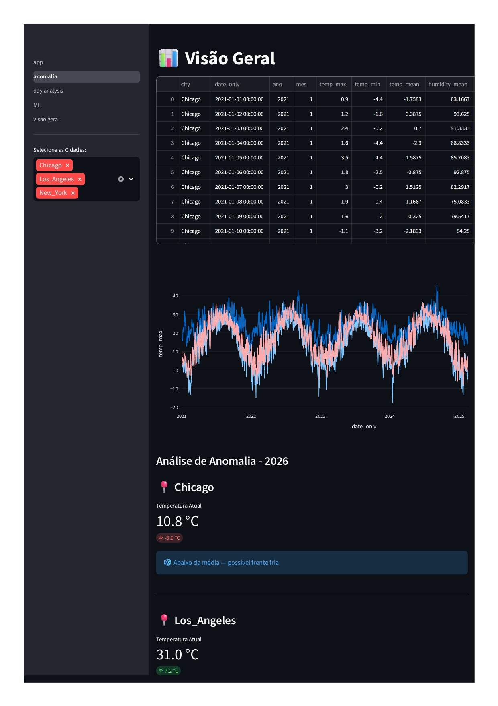

Projects



Data Pipeline
Data Engineering Project — Open-Source Cloud Stack
A production-grade Data Engineering project simulating AWS infrastructure locally using LocalStack, orchestrated with Apache Airflow, processed with PySpark, and provisioned with Terraform.







Pipeline de dados climáticos
Weather Data Pipeline
Pipeline de dados climáticos com Airflow, PostgreSQL, MinIO e Streamlit.


Credit Risk Intelligence Dashboard
An end-to-end credit risk analysis and decision-support system that combines machine learning and financial impact simulation to enable transparent and business-driven lending decisions.
Financial institutions face a constant trade-off between risk mitigation and customer approval. Approving high-risk loans leads to financial losses, while overly conservative credit policies reduce growth.
This project demonstrates how data science and explainable machine learning can be used to:
- Predict loan default risk Explain model decisions transparently
- Quantify financial impact through interactive simulations